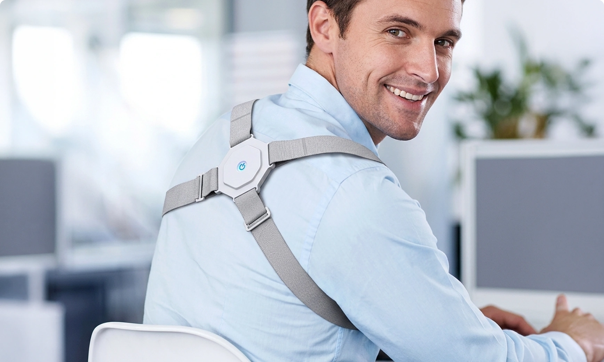
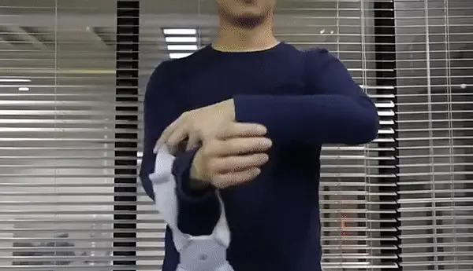
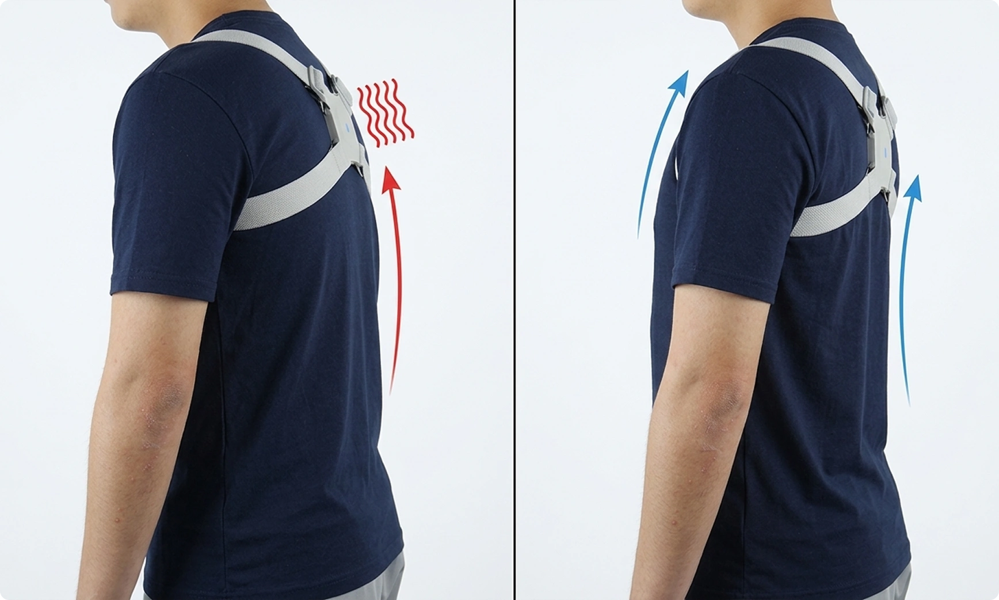
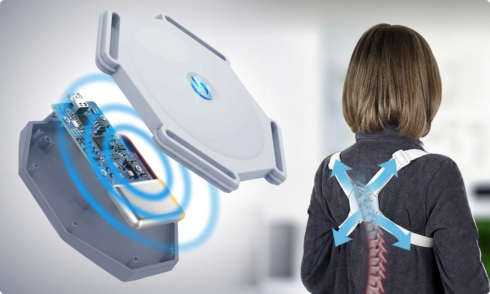
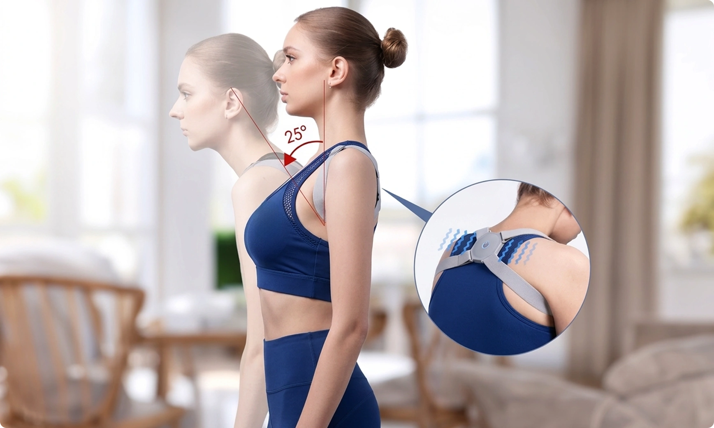
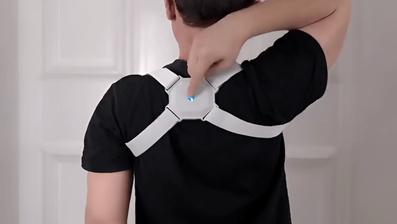
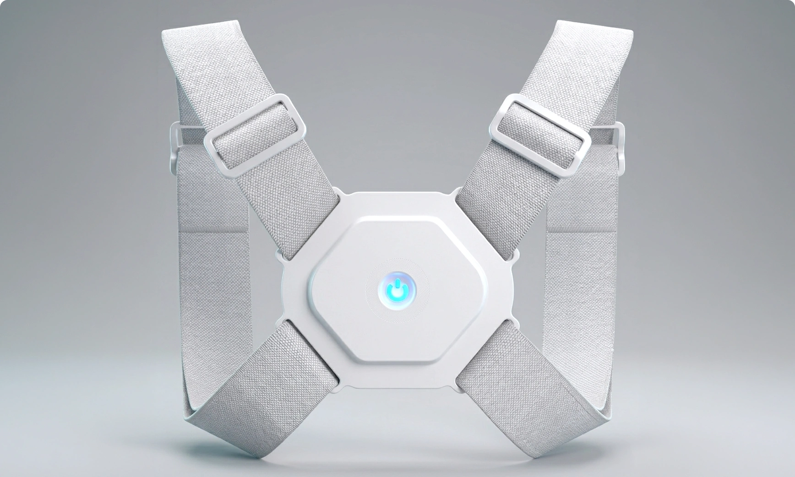

Straighten Up and Live Pain-Free – With This Smart Posture Corrector
Written by ane Brown
| March 15, 2026 |

This incredible device has significantly improved my posture. I am no longer slouching over my desk at work, and I don’t have back pains anymore!
When I was younger, I used to be active all the time and could proudly admit to being in good physical shape. Now, after my knee injury, I’ve been forced to slow down, get an office job, and slowly lose my physique. Together with that went my back muscles, and my posture became less than ideal.
Over the years in the office, slouching over my desk for 8 hours minimum every day, I began getting severe and more persistent back and shoulder aches. I was constantly feeling very tired and irritable. I even noticed a little fat forming on my belly (I have to admit, that could also be a sign of ageing and a poorer diet) and decided that I’d had enough!
I spoke to my GP about my problems, and she pointed out that all of them could be caused by bad posture. I thought about it for a while, and everything made sense! Thought about the way I sit at my desk and... It really did start when I stopped exercising that much and started spending more time sitting down.
So, naturally, my next question was: “What do I do?!”
So, the doctor suggested that I start engaging my back muscles more when exercising and try out the SpineBuzz posture corrector to remind me to straighten up when I’m sitting down.
What makes SpineBuzz such a great deal?

So, apparently, bad posture can do much more harm than just some shoulder pain.
Besides back pain, constant slouching can also cause spinal dysfunction, headaches, muscle fatigue, aches and pains in the whole body, disrupted digestion, and potbelly. It can even affect blood circulation, resulting in swelling of your legs and further joint and muscle pain.
I never even thought that my slumping at the desk was causing me heartburn! I used to eat the antacid tablets like candy, but all I had to do for it to stop was simply sit up straight...
But beating the habit of sitting in a hunched position isn’t as easy as it may seem. If your torso muscles aren’t well trained, your back naturally collapses into a curve.
So, SpineBuzz really helped me with a few things:
- It never fails to notice me when I involuntarily start slouching. Whenever my back bends over 25 degrees, I get a gentle nudge on my back and immediately straighten up.
- This also reminds me to stand up, move around, and do some desk exercises to engage and strengthen the muscles.
- I can wear it underneath my blazer, so nobody in the office has to know that I’m wearing a posture corrector. It is very discreet, so I am saved from unnecessary embarrassment from my coworkers, who I know for a fact would jokingly tease me all the time.
And best of all, with a single purchase, and very affordable at that, I was able to solve all my health problems!
Small, yet genius device for your wellbeing!

Smart posture correction technology
SpineBuzz’s advanced technology identifies when your back is bent 25° or more. Once you start slouching, it sends you a signal to straighten up.
Discreet design
The device is very small and completely unnoticeable under clothes. It is ideal for work or other social settings as it doesn’t draw any unwanted attention.
Comfortable and durable materials
Made of high-quality materials, SpineBuzz ensures absolute comfort and long-lasting durability. Comfortably wear it for two hours or the whole day, for months or even years, as long as it takes you to develop a healthy posture.
Adjustable straps
Customizable straps allow you to easily find the perfect fit. SpineBuzz perfectly adapts to the body shape and size, ensuring maximum comfort and effectiveness.
Easy maintenance
SpineBuzz requires virtually no upkeep. You can hand wash the straps occasionally to keep them clean, but that’s pretty much all the effort needed to maintain this device good for use.
Quickly rechargeable battery
It only takes about an hour to fully charge the battery, which minimises downtime and allows you to enjoy non-stop posture support without extended waiting periods.
Silent reminders
SpineBuzz provides gentle vibrating reminders to adjust your posture without causing disruptions to your daily activities or distractions to people near you.
Suitable for all ages
This versatile device can be worn by people of all ages, promoting healthy posture habits across generations. Children, adults, and seniors alike!
Great value for money
SpineBuzz smart posture corrector combines advanced features with an affordable price point, making it one of the most accessible and effective solutions for posture improvement.

SpineBuzz provides unmatched user-friendliness

SpineBuzz is worn by strapping it to your upper back only. The soft elastic straps go under the armpits and over the shoulders and don’t restrict your movements in the slightest.
It can also be worn underneath your clothes or over them – whatever is your preference.

Activating SpineBuzz is also as easy as it gets – just press the button in the middle of the device, put it on, and start the posture improvement!
The feedback is amazing
It comes as no surprise to me that I’m not the only one obsessed with SpineBuzz. There are so many excellent reviews and here are just some of them:
“I am beyond impressed with this smart posture corrector! As a desk worker, I often find myself hunched over my computer, and SpineBuzz has been a game-changer. It discreetly reminds me to sit up straight – it's like having a personal posture coach with me all day. My back and shoulder pains are a thing of the past since I started wearing it to work. Highly recommended!”
“I'm in my 60s and have struggled with my posture for years. SpineBuzz has really made a huge difference. It's very comfortable, and I hardly notice I'm wearing it. I love the discreet design and quiet vibrations, as I can wear this posture corrector to my book club, and nobody knows about it! I no longer have to deal with constant backaches. This device is a lifesaver, and I can't recommend it enough!”
“I purchased this posture corrector for my teenage daughter, and I couldn't be happier with the results. She used to complain of back pain due to poor posture, but this device has made a noticeable difference. The silent reminders have helped her develop healthier posture habits. The quality of this product is impressive, especially for such a low price! I feel like it's a very small investment in my daughter’s long-term health.”
No wonder SpineBuzz is being nominated as the top choice for posture correction of 2026!
Limited Time Offer

Improve your posture and overall wellbeing!
Now, purchasing from the official website provides a 50% discount!
What a deal! You can get this smart posture corrector for half the price WITH FREE SHIPPING! You’re not only saving a lot on the purchase, but it also costs nothing extra for it to be delivered right to your doorstep.
So, if you feel like it’s time for you to improve your posture but don’t want to wear the restrictive correctors and would also like to save some money – SpineBuzz smart posture corrector is the perfect choice!
Just click the button below to get it today for yourself or a loved one as a nice and thoughtful gift.
Update
As of today, SpineBuzz is still available at 50% Off, but the stocks are becoming quite limited, so don’t postpone your chance to get this intelligent posture corrector!
Also, don’t forget that Free Shipping applies to all orders, and on top of that, you would be receiving a 30-day money-back guarantee! So, not only would you be saving money on your purchase, but you’d also be shopping completely risk-free.
Don’t miss out and grab your SpineBuzz while it’s still available!